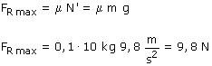

|
Ecuación de la dinámica del c.d.m:
Calculamos la fuerza de rozamiento entre bloques aplicando la dinámica a uno cualquiera de ellos
Para que los bloques vayan juntos la fuerza de rozamiento entre ellos tiene que ser de 8.2 N. Vamos a ver si este valor es posible: El valor máximo de la fuerza de rozamiento entre bloques es:  Hay fuerza de rozamiento suficiente para que los bloques vayan juntos... la aceleración calculada es correcta |